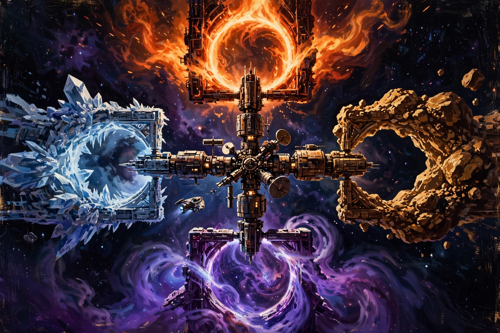

In 1992, Crossroads of the Elements was the door game on The Major BBS: one shared world, four elemental realms, and a terminal for eyes and ears. This is that game, re-skinned in orbit — except the four powers holding the gates are no longer elements. They are AIs, each with a personality, a specialty, and opinions about the other three. The gameplay is the original's: travel the realms, fight for experience, and decide what kind of pilot you become. Everything the world does on its own arrives marked *** — exactly the way the old board did it.
Every pilot at the Crossroads flies under one of the four. Your patron lends you its element, its signature power, and its temperament — and the other three will have something to say about your choice. You can still borrow their tricks later. That's the mixing, and the mixing is the game.
Pick a patron to enable the terminal.
Crossroads was a door game: it lived on a bulletin board, and when you logged off, your character "disappeared" from the world and was stored until you dialed back in. That one trick — a persistent world that exists between your visits, shared with everyone else on the board — is the seed of every MMO and shared online world since. The world doesn't pause for you. It barely notices you. That's what makes coming back feel like returning somewhere.
PYRA, BASTION, NULL, and SAGE aren't four paint jobs on one stat block. Each one's temperament is its math: PYRA's impatience is a damage bonus and a crit chance; BASTION's caution is hull and plating; NULL's unpredictability is a dodge roll; SAGE's patience is cheap powers and faster learning. When you choose a patron you're not picking a favorite color — you're picking a way of solving problems, and the game will keep handing you problems your patron is bad at.
The original capped you at 30 levels combined across weapon and spell tracks — you could not max everything, so every character was a decision. This version adds the social version of the same idea: at the station you can sync with a rival AI and borrow its trick for a day. Specialization tells you who you are; borrowing tells you who you're becoming. Real expertise works the same way — a deep home discipline, plus whatever you've picked up standing next to people unlike you.
Door games rationed you — a handful of turns a day, because the BBS had one phone line and a hundred callers. Scarcity turned every move into a choice: explore one more sector, or bank the turns and live? Modern games hand you infinite retries; the door game taught planning under a budget. Watch what 40 turns does to your decision-making by turn 35. That tightening is the lesson, and it transfers to every real budget there is.
The original told players: your terminal is your eyes and ears, and anything that isn't your own action arrives marked ***. That's a whole design philosophy in one convention — separate what you did from what the world did, clearly, every time. Every log file, every audit trail, every honest status report since runs on that distinction. When you read the terminal here, you're reading the world the way a sysop did in 1992.
Fly your first day entirely on blaster, your second entirely on power, and compare the pilot you've built — same gates, different animal. Then sync with the patron whose element beats yours and notice how the wheel feels from the other side. And once: spend a whole day just hailing pilots and reading the *** traffic. The world mixing itself — feuds, gifts, alliances — is a game running underneath the game.